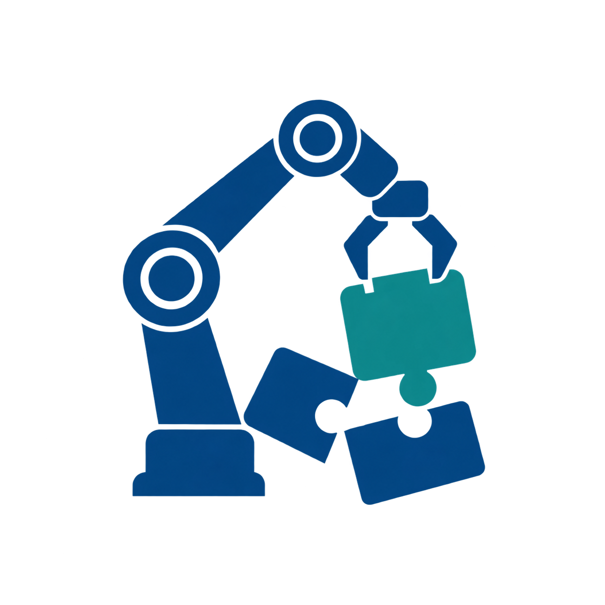
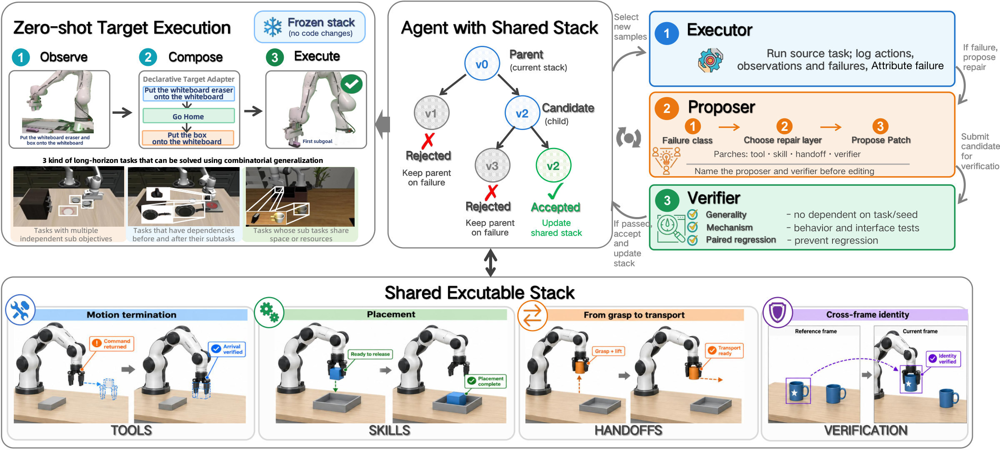
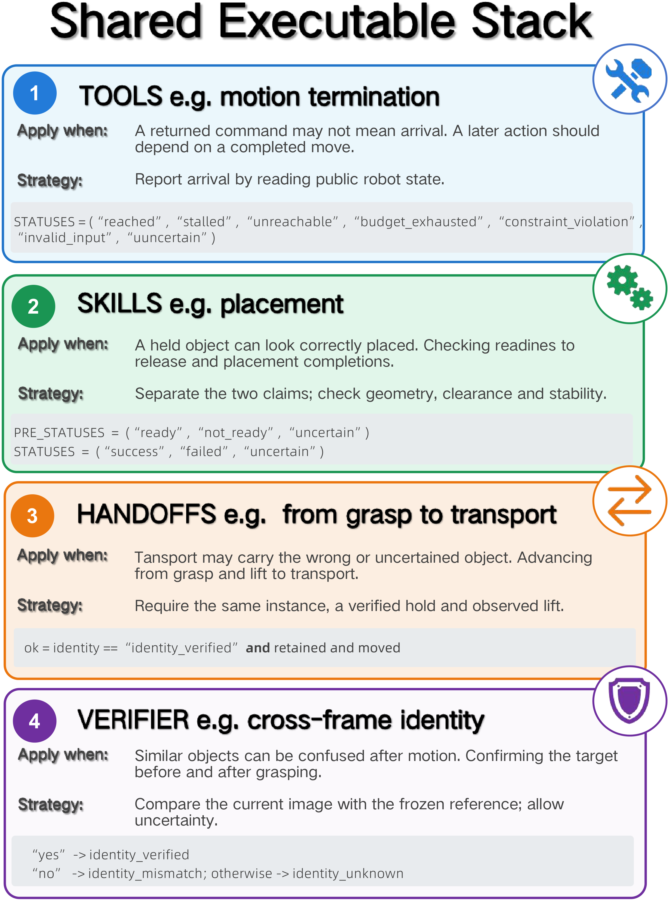
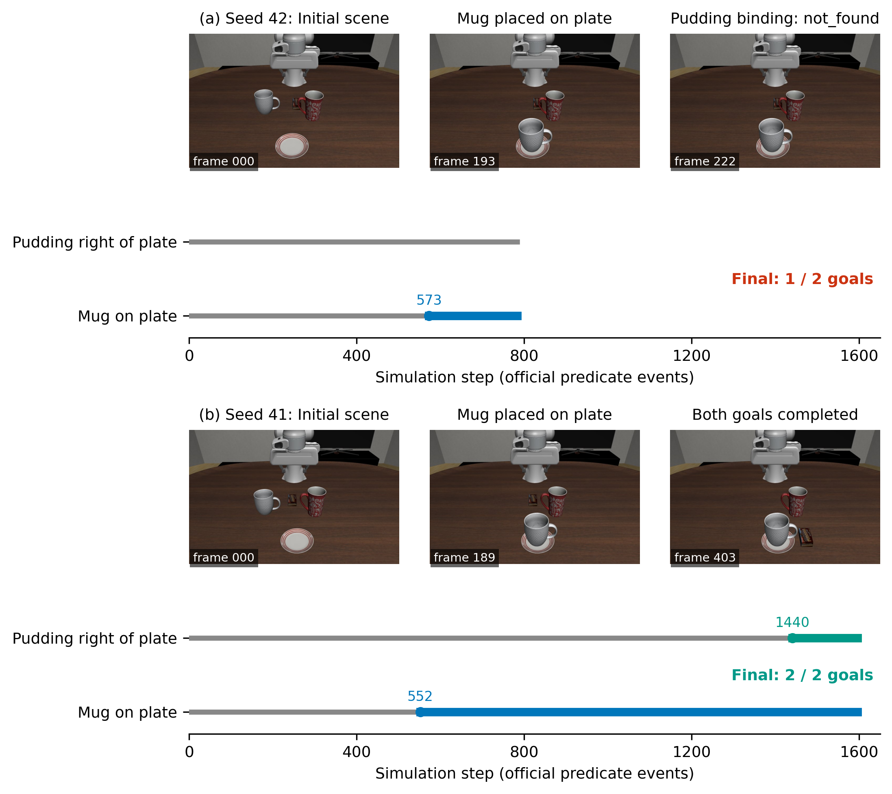
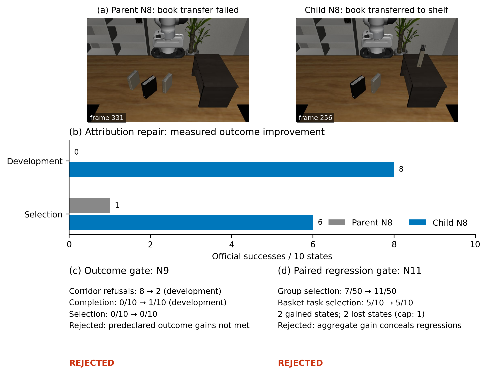
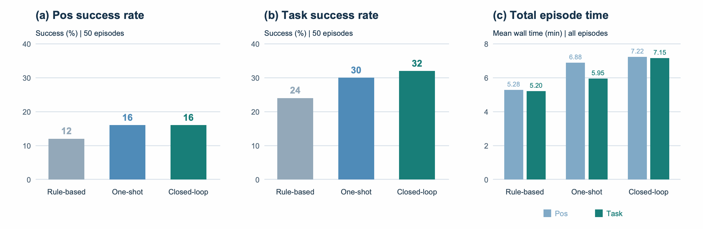

Unable to play here. Open the video directly ↗
Shared basket
Place the mug and milk carton in the same basket.
Mug → basketMilk → basket

Learning to Compose
Updated manuscript
Improve one shared executable stack. Validate each repair.
Reuse the frozen stack on unseen task compositions.
Reusable perception,
planning & execution
Programs with observable
execution contracts
Successor readiness
& preserved goals
Object identity
& task relations
01 / THE IDEA
Long-horizon robot manipulation requires individually capable skills to compose into physically feasible sequences.
Tools can lack a needed capability, report completion too early, or leave a state that the next skill cannot use.
Recursia is a stack-aware, validation-gated framework for recursive self-improvement. Source-task failures guide a coding agent to generate missing tools or repair shared tools, skill contracts, handoffs, and verifiers. Candidates undergo generality checks, mechanism tests, and paired regression tests before acceptance.
The resulting stack is frozen and reused through declarative adapters, making a source-side repair available to multiple skills and unseen compositions. Experiments cover LIBERO-Pro Long simulation and a physical Franka FR3 with Franka Hand. The manuscript reports gains over ASPIRE of 5.8 percentage points on Pos and 15.1 points on Task, and a 40-point mean gain over Skill Document Only across three physical target tasks.
Adapted from the updated manuscript.02 / THE METHOD
Experience is retained as shared executable functionality. Each accepted change becomes part of a versioned stack.

Run a source task and identify the first supported execution failure.
Generate a missing tool or repair a tool, skill contract, handoff, or verifier.
Check generality and mechanism, then compare paired source outcomes and regressions. Retain or reject.
Reuse the accepted stack on unseen target compositions through declarative adapters.
The proposer and evaluator have separate roles. Selection and hidden regression evidence are withheld from the proposer.
Contracts provide observable checks, not formal guarantees. In the documented implementation, placement verification runs as shadow monitoring; it does not gate execution or trigger corrections.

Completion is not readiness. A predecessor's achieved goal does not guarantee its successor's prerequisites.
03 / SIMULATION TRANSFER
LIBERO-90 → LIBERO-Pro Long.
The shared stack is frozen before target execution.
Recursia target success

The manuscript evaluates 10 target tasks with 50 seeds each: 500 episodes per perturbation axis. Rates are task-macro averages. The supplied PDF does not include the referenced per-task tables or uncertainty estimates.

N counts improvement iterations, with five source samples per iteration. The N=18 checkpoint reaches 23.2% Pos and 43.4% Task. This is a separate study; its endpoint is not the 28.4% / 53.4% primary configuration above.
04 / REAL-ROBOT DEMONSTRATIONS
Three physical target tasks on a Franka FR3 with Franka Hand. Source knowledge stays frozen throughout evaluation.
Place the mug and milk carton in the same basket.
Place the blue mug on the left plate and the white mug on the right plate, reversing the source assignments.
First place the bowl on the plate, then place the mug in the relocated bowl.
Selected successful motion recordings at original speed. Each video includes all supplied motion segments in chronological order; unrecorded perception and model-wait intervals are omitted. Displayed durations are recorded motion time, not full trial wall-clock time.
05 / PRELIMINARY PHYSICAL RESULTS
A first comparison with Skill Document Only (SD-only), which retains source experience in a natural-language skill document.
Recursia
| Target task | SD-only | Recursia |
|---|---|---|
| T1 · Shared basket | 0.0% | 20.0% |
| T2 · Reassigned plates | 60.0% | 80.0% |
| T3 · Bowl–mug dependency | 20.0% | 100.0% |
| Average | 26.7% | 66.7% |
Manuscript-reported preliminary physical target-task success on Franka FR3 with Franka Hand (Table 1). Each method runs ten trials per task; success is assessed manually. Average is the mean across the three target tasks. Source knowledge stays frozen, while within-trial feedback can change execution decisions. The selected demo videos are examples, not estimates of success rates.
LIBERO-Pro Long Franka FR3
06 / ANALYSIS
Retrospective cases and a matched inference study examine readiness, validation, and execution on a frozen stack.
RETROSPECTIVE CASE EVIDENCE
At N=6, the first mug goal held in 10/10 recorded episodes, but the full mug–pudding task succeeded in 1/10. These are recorded cases, not a controlled ablation.

SOURCE-SIDE VALIDATION CASES
At N=9, corridor refusals fell from 8 to 2, but development success improved only from 0/10 to 1/10 and selection stayed at 0/10: the required gains were not met.

At N=11, selection improved from 7/50 to 11/50. Yet basket placement had two gains and two losses, exceeding the one-loss per-task cap; the candidate was rejected.
SAME FROZEN N=13 STACK
Online decisions match one-shot Pos success and add two percentage points on Task, with higher mean episode time.

| Inference driver | Pos success | Task success | Pos mean time | Task mean time |
|---|---|---|---|---|
| Rule-based | 12% | 24% | 5.28 min | 5.20 min |
| One-shot task program | 16% | 30% | 6.88 min | 5.95 min |
| Online closed-loop | 16% | 32% | 7.22 min | 7.15 min |
“One-shot” describes the lifetime of the task program. All three drivers may use observation feedback and closed-loop low-level control. Episode means include latency, failures, and timeouts.